“真正让人能坚持用下去的睡眠看护，往往是你根本感觉不到它在看护。”
有没有过这种两难：爸妈年纪大了，一个人住，做儿女的最放心不下的就是夜里。半夜摸黑起来去趟卫生间，万一脚下一滑，可能在地上躺到天亮才被发现。
想在卧室装个摄像头，老人觉得像被当成病人盯着，浑身不自在；买个智能手环，睡觉嫌勒手腕，忘充一次电就彻底塞进抽屉吃灰了。
其实，用一块二十多块钱的 ESP32-S3 开发板，配一片火柴盒大小的 60GHz 毫米波雷达（再顺手加上 OLED 床头小屏与 WS2812 起夜柔光灯带），就能搭出一台真正无感的睡眠监护仪：它没有镜头、不拍任何画面，也不用往身上戴任何东西。
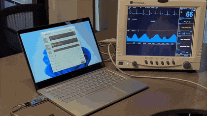
实测画面：左边电脑上是 60GHz 雷达隔空读出的呼吸与心率，右边是医用监护仪对照 视频来源：@SeeedStudioSZ
上面这段，是把毫米波雷达和医用监护仪放在一起实测。下面这段更直观：人一摔倒，雷达屏幕上代表他的那团点云，立刻从竖着的一条变成了贴着地面的一片，马上就能触发报警。
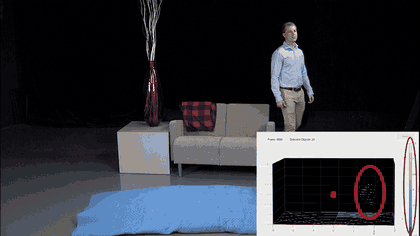
点云雷达摔倒检测：不拍人脸画面，只靠点云高度变化识别人体倒地 视频来源：@TexasInstruments
整套零件自己用 ESP32 动手搭下来只要 60～80 元（只测在不在床的基础模块甚至只要 15.9 元；不想接线买出厂刷好固件的成品套件大约 180 元）。放在爸妈房间，最核心能管好下面这 4 件事：
ESP32 + 毫米波雷达放床头，能管哪 4 件事？
不拍画面、不伤老人自尊，也不用提醒老人给手环充电，装好就能默默守着夜里这 4 个场景：
▲ 父母夜间无感看护 4 大场景一屏总览（场景配图由 AI 生成）
这篇讲什么
从原理、5 层架构、ESP32 接线，到手机微信收睡眠简报与离床报警
1痛点与原理：凭什么隔着被子也能数心跳
摄像头、手环、红外与 60GHz 毫米波雷达硬核对比
2系统架构与接线：一块 ESP32-S3 怎么连全套模块
5 层系统架构图 + 一张接线表看懂 4 根核心线
3实测与联动：呼吸心率、起夜柔光灯与摔倒告警
真实对比测试动图、穿门测距与最佳安装角度
4上云与手机报告：早起一张平安卡，附 AI 提示词
几十块 ESP32 直推微信 vs 180 元成品套件两种装法
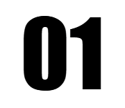
痛点与原理：凭什么隔着被子也能数心跳
给家里老人做夜间看护，很多儿女都踩过前三种方案的坑。把它们跟 ESP32 + 60GHz 毫米波雷达 放在一起比，差别一目了然：
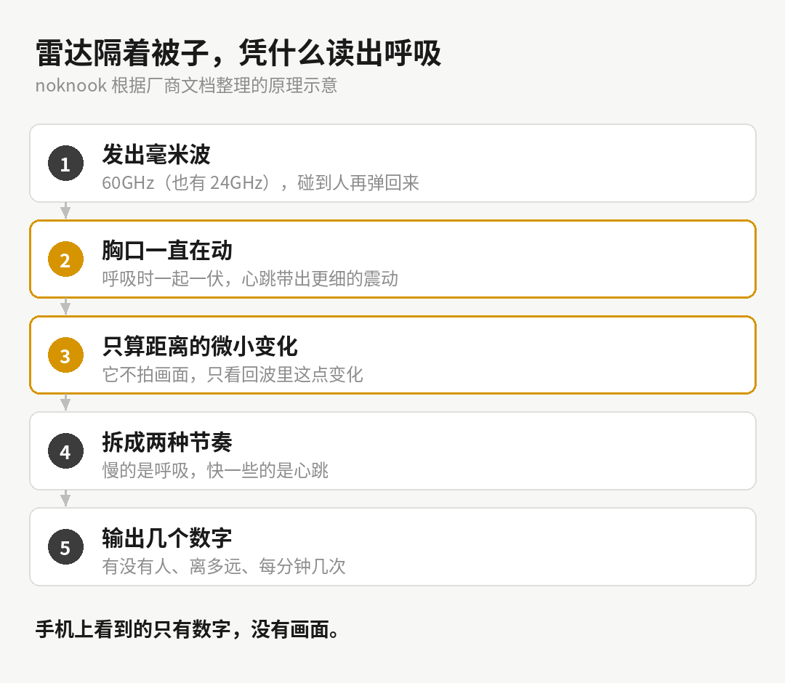
noknook 自制图解：毫米波穿透被子捕捉胸腔起伏与心跳微震动
它凭什么能隔着被子数呼吸？毫米波雷达发出的是 60GHz（基础存在雷达是 24GHz）的高频电磁波，能轻松穿透衣服和棉被，碰到人体皮肤后再反射回来。
人哪怕熟睡一动不动，胸口也会跟着呼吸一起一伏（幅度约几毫米），心脏跳动还会在胸壁带出更细微的震动。雷达内部的 DSP 芯片专门通过回波的相位变化（多普勒效应）把这两股波形剥离出来：变化慢而深的是呼吸，快而细的是心跳，直接换算成每分钟多少次。
所以它在卧室里扮演的不是“摄像头”，而是一个不睡觉的隐形门卫：床头多了一个烟盒大小的小白盒，老人心里完全不抵触。
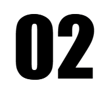
系统架构与接线：一块 ESP32-S3 怎么连全套模块
如果你想给爸妈搭一台既能看时间、起夜能自动亮柔光灯、又能往你手机发睡眠报告和离床告警的完整睡眠仪，整套系统的 5 层结构非常清晰：
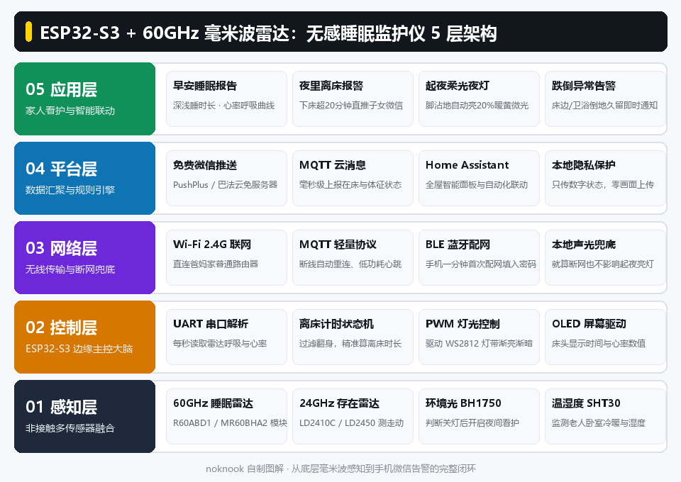
noknook 自制图解：ESP32-S3 + 60GHz 毫米波雷达无感睡眠监护仪 5 层架构
很多没碰过雷达的朋友最担心：「毫米波信号处理那么复杂，我不会写算法怎么办？」
好消息是：你一行信号算法都不用写。像市面上成熟的 60GHz 睡眠雷达模块（比如国产云帆瑞达 R60ABD1、海凌科模块或 Seeed MR60BHA2），雷达板子上自带处理器，已经把原始回波算成了现成的「有人/无人、运动/静止、呼吸率、心率、深浅睡眠状态」，每秒钟通过串口（UART）自动往外吐数据包。
ESP32-S3 要干的活特别简单：从串口读出这几个现成数字 → 显示在床头 OLED 小屏上 → 判断要不要开起夜灯或往手机发微信告警。
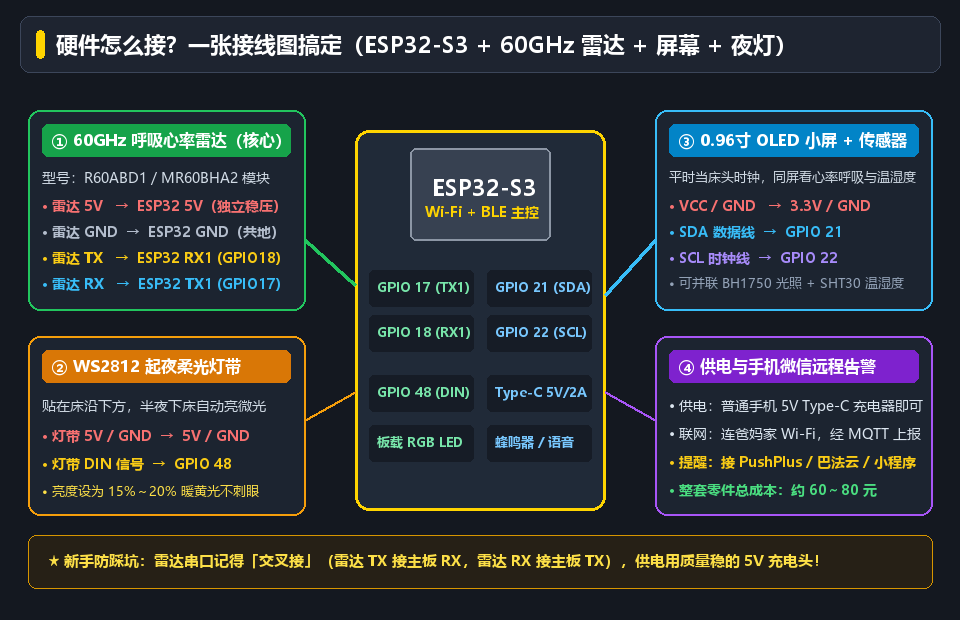
noknook 自制图解：ESP32-S3 核心接线图（雷达 4 根线 + 屏幕 + 起夜柔光灯带）
你看上面这张接线图，最核心的 60GHz 雷达模块跟 ESP32 之间，总共只需要连 4 根杜邦线（5V 接 5V、GND 接 GND、雷达 TX 接主板 RX、雷达 RX 接主板 TX）。实际插上线，就只有下面实拍里这么一丁点大：
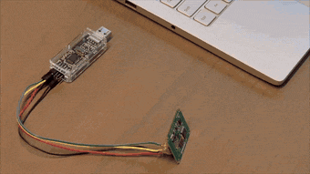
实拍接线：指甲盖大小的 60GHz 雷达模块，4 根杜邦线连上主板就能实时吐出数据 视频来源：@SeeedStudioSZ
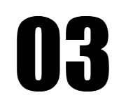
实测与联动：呼吸心率、起夜柔光灯与摔倒告警
装在床头到底准到什么程度？我们把厂商测试、智能手表同步对照和真实居家实测放在一起看，不吹不黑：
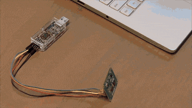
实测对比 1：60GHz 雷达与医用监护仪同台对比呼吸与心率波形 视频来源：@SeeedStudioSZ
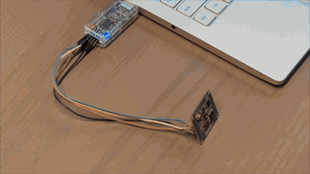
实测对比 2：桌上小雷达隔空测出的心率（69→67），与手腕上智能手表读数实时同步 视频来源：@SeeedStudioSZ
一位创客给刚做完手术的老父亲装了一台在床头，把实时读数放到手机网页上随时看。他在测试时发现了一个很关键的细节：
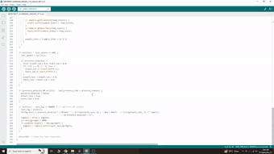
实测对比 3：坐在书桌前晃动身体时，手指血氧仪与雷达读数对照 视频来源：@spirit-teacher
当人坐在桌前打字、身体不时晃动时，呼吸读数会在每分钟 15 到 31 次之间来回跳；而一旦安静躺到床上，读数就稳下来了。这和雷达手册写的一模一样：呼吸心率算法专门针对睡眠静止状态设计，最佳装法是在床头正上方约 1 米处向下倾斜 45° 对准胸口（距离 1.5 米以内）。
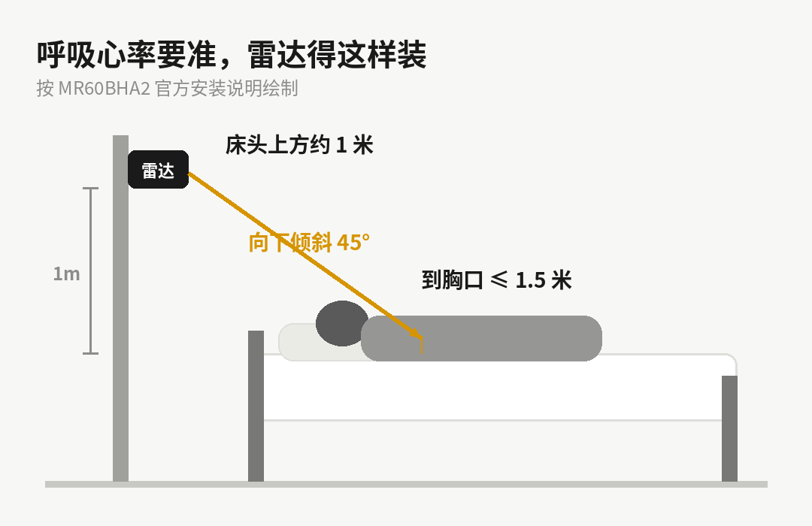
noknook 自制图解：60GHz 睡眠雷达床头黄金安装高度与角度
因此，呼吸和心率这两项，最实用的看法是「看整晚趋势，不盯某一秒的数字」（注意它不是医疗器械，不能代替医院检查）。平时爸妈夜里平均呼吸 14 次、心率 60 次，如果哪天夜里连续几个小时突然飙高，第二天一早你就能留个心眼打个电话问问。
而在日常看护里，比心率更立竿见影的，是「起夜柔光灯」和「离床/摔倒告警」：
只想知道人在不在床上、或者走到了过道哪个位置，甚至可以用更便宜的 24GHz 模块：LD2410C 原厂只要 15.9 元；升级款 LD2450 还能在屏幕上同时画出最多 3 个人的实时坐标，哪怕隔着 3.5 厘米厚的实木房门也能穿透识别：
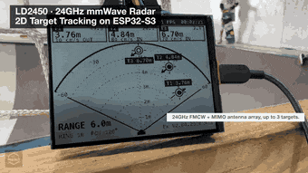
LD2450 接 ESP32-S3：小屏幕上实时画出人在房间里的走动位置 视频来源：@ThatProject
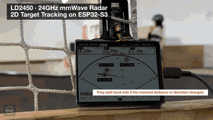
穿门实测：隔着 3.5 厘米实木门，ESP32-S3 依然能隔门追踪门后走动距离 视频来源：@ThatProject
如果家里卫生间干区或床边地面滑，还可以配合 C1001 这类 60GHz 跌倒点云雷达（约 200 元，装在天花板往下看）。海外评测者在家实测摔倒识别后给出的经验很实在：单颗雷达的有效摔倒识别半径大约 1.8 米，所以最适合专门守住床边或马桶旁这一小块高危区域。
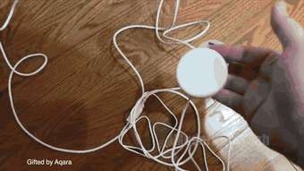
居家摔倒实测：在雷达覆盖区内倒地静止后触发告警 视频来源：@ModernDayReviews
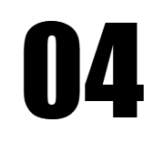
上云与手机报告：早起一张平安卡，附 AI 提示词
把前面这几样串起来，爸妈完全感觉不到卧室里多了什么负担，而你在外地打开手机微信，每天早上能收到一张清清楚楚的「昨晚睡眠平安简报」，半夜遇到离床超时也能第一时间收到提醒：
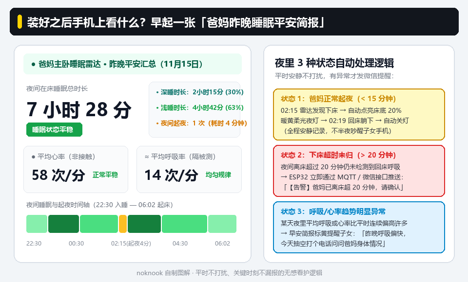
noknook 自制图解：手机端早安睡眠简报卡片与夜间 3 种状态自动处理逻辑
很多朋友问：「爸妈家只有普通路由器，没有树莓派服务器，怎么把提醒发到我手机上？」下面「几十块 ESP32 自搭直推微信」和「180 元免代码成品套件」两种落地方案，按你手头的情况二选一就行：
noknook 自制图解：两种装法对比（ESP32 自搭直推微信 vs 免代码成品套件）
方案一：ESP32-S3 自搭直推微信（零件约 60～80 元，爸妈家不用装服务器）
按第二节的接线图把 ESP32-S3、雷达模块、OLED 小屏和 WS2812 灯带插好。不需要自己会写 C++ 代码，直接打开国内常用的 豆包、通义千问、Kimi，或者 Cursor、Claude Code，把下面这段完整工程提示词复制过去，AI 就会一步步生成全套可烧录代码：
📋 直接复制给豆包 / 千问 / Kimi（生成 ESP32 睡眠雷达完整程序）
我想用一块 ESP32-S3 开发板通过 UART1（GPIO17/18）连接 60GHz 睡眠呼吸心率雷达（如 R60ABD1 或 MR60BHA2），I2C（GPIO21/22）接一块 0.96 寸 OLED 屏，GPIO48 接一条 WS2812 灯带，连上爸妈家的 Wi-Fi。请帮我写出完整的 Arduino 工程代码，实现以下 3 个功能：1. 解析雷达串口数据，在 OLED 屏上显示当前时间、呼吸率、心率与在床状态；2. 夜间 22:00–06:00 检测到人下床时，点亮 WS2812 灯带（20% 亮度暖黄光），回床后自动熄灭；3. 如果夜间连续 20 分钟检测不到有人在床，立即通过免费的微信推送接口（PushPlus 或巴法云 MQTT）往我的微信发送告警消息「爸妈已离床超过 20 分钟，请留意」，并在每天早上 8:00 推送一条昨晚在床时长、起夜次数与平均心率呼吸汇总。
方案二：免接线成品套件 + Home Assistant（约 180 元，一分钟配网）
如果你连 4 根杜邦线都不想插，或者家里本来就装了 Home Assistant 智能家居主机，直接买现成的 MR60BHA2 套件（把 60GHz 雷达和 XIAO ESP32-C6 做进了一个小白盒，出厂已刷好 ESPHome 固件）。插上手机充电头，连上它的热点填好家里 Wi-Fi，1 分钟就能在手机面板里看到实时曲线：
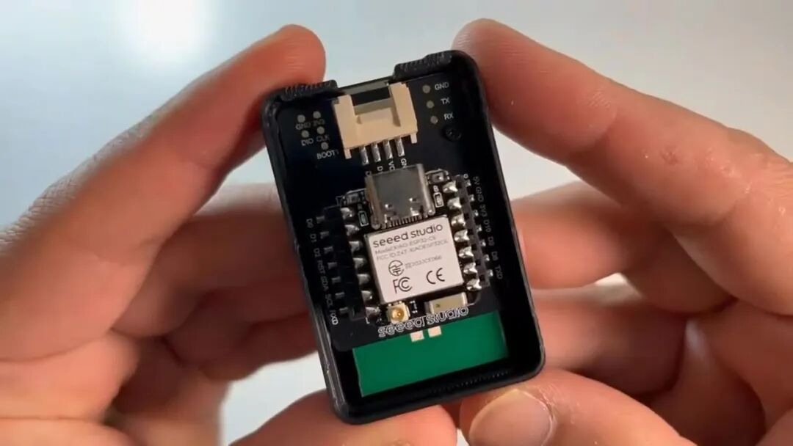
图片来源：@beautydevices-net；MR60BHA2 成品套件开盒，插上 Type-C 充电线即可工作
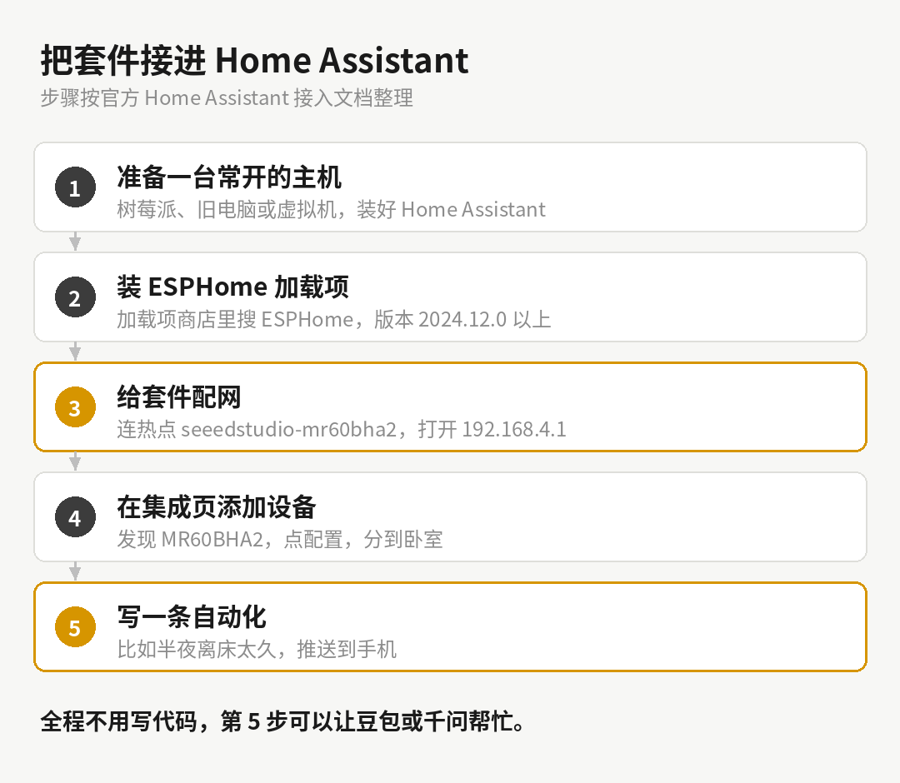
noknook 自制图解：成品套件 3 步连入 Home Assistant
💡 装进爸妈房间前，记住这 3 条实战经验
① 避开晃动干扰源：雷达不要正对着电风扇、空调出风口或被风吹动的窗帘，供电尽量用质量稳的手机充电头。
② 呼吸心率适合单人床位：离床提醒哪怕两个人睡也能用；但呼吸和心率在一张床睡两个人（或有宠物上床）时会互相叠加，看个长期趋势就好。
③ 先给爸妈看一眼手机界面：装好后把手机界面拿给爸妈看一眼，让他们亲眼看到上面只有几个数字、完全没有画面，老人心里踏实了，这个小盒子才用得长久。
雷达能做的，是夜里万一有事能让你早一点知道。平时常打个电话、周末常回家看看，那份安心是任何传感器都替不了的。
文中开源文档与资料地址
https://wiki.seeedstudio.com/getting_started_with_mr60bha2_mmwave_kit/
https://wiki.seeedstudio.com/ha_with_mr60bha2/
https://esphome.io/components/sensor/ld2410/
https://esphome.io/components/sensor/ld2450/
https://www.dfrobot.com/product-2861.html
文中实测动图版权归原作者，图注已署名；架构图、接线图与界面图解为 noknook 自制。
📚 往期推荐 · 延伸阅读
如果你对「用 ESP32 低成本改造家庭生活」感兴趣，这 4 篇读者转发最多：
01🔥 3万阅读爆款
20块的ESP32，在 Ai 时代凭什么这么火？看完就明白了
读懂这块睡眠雷达背后那颗十几块钱的「万能芯片」，为什么成了全球创客的头号宠儿。
02🏠 5400+阅读 · 居家必看
除了床头睡眠雷达，这块小板子放在客厅、厨房、阳台还能解决哪些具体痛点？
03🤖 2800+阅读 · 桌面陪伴
想做会聊天、有表情、会转头的桌面机器人？这套ESP32 方案足够了！
一块小屏幕当脸、两个舵机转头，放在书桌或老人床头能陪聊的开源小机器人。
04👨👩👦 家人关怀系列
一位爸爸把墨水屏刷成了儿子的听写老师：不发光，也刷不了短视频
给孩子和长辈做硬件，最怕花里胡哨：不伤眼、零广告，只把一件事做到位。
💡 提示：点击文首合集标签或下方「noknook」头像进入主页，即可按分类连读全部往期文章。
你好，这里是 noknook。
记录值得上手的 AI、开源工具和生活小发明。
把 AI 用起来，让生活更有意思。
长按识别二维码，关注 noknook